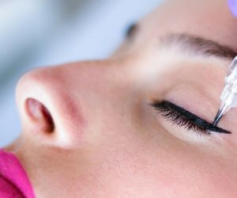

Makijaż permanentny jest coraz bardziej popularnym zabiegiem kosmetycznym, na który decyduje się coraz więcej kobiet na całym świecie. Ogromnym atutem jest oszczędność czasu podczas porannego makijażu, a także jego niezmienność bez względu na porę dnia, warunki atmosferyczne, a nawet wyjście spod prysznica lub z basenu. Makijaż permanentny to zabieg polegający na trwałym podkreśleniu takich elementów twarzy, jak usta, oczy i brwi. W przypadku oczu jest to wykonanie kreski na górnej i/lub dolne powiece, w przypadku brwi wyregulowanie ich kształtu i nadanie większej intensywności, natomiast w przypadku ust zaznaczenie i wyregulowanie konturu oraz delikatne wzmocnienie koloru.
Makijaż permanentny powinien być wykonany przez linergistkę posiadającą do tego
odpowiednie uprawnienia,
oraz przy użyciu odpowiedniego sprzętu i jednorazowych końcówek. Zachowanie tych zasad gwarantuje
prawidłowy przebieg zabiegu permanentnego pigmentowania skóry.
Wykonuję makijaż permanentny brwi każdą metodą: piórkową, włoskową, microblading i cienia, ombre. Wykonuję także kreseczkę dekoracyjną na górnej i dolnej powiece, zagęszczenie linii rzęs, oraz permanentne usta, kontur, kontur i cieniowanie, usta 3D shine.
Najczęściej wykonywanym i wybieranym jako pierwszy jest makijaż permanentny brwi. I taki makijaż możemy zrobić na dwa sposoby.
Tu możemy pozwolić sobie na bardziej radykalną zmianę naturalnego kształtu, podniesienie łuku, nadanie lekko złamanego kształtu (tzw. brwi mewki), pogrubienie brwi u nasady. Taka zmiana korzystna jest dla kobiet, które nie są zadowolone ze swojego naturalnego kształtu, bo ich brwi są proste, męskie, zbyt krzaczaste, nieregularne, mają tendencję do schodzenia w dół (tzw. sowie brwi) lub Pań które w ogóle nie mają brwi. Metoda nadaje się dla każdej klientki, i błędna jest opinia, że jest to metoda mocna i nienaturalna. Wszystko zależy od użytych pigmentów do danego typu urody oraz oczekiwań klientki. Przerysowane i mocny efekt utrzymuje się jedynie przez kilka dni po zabiegu. Po wygojeniu, metoda cienia pozostawia na skórze delikatny cień w nadanym kształcie. Utrzymuje się zdecydowanie dłużej niż piórkowa, bo od 1 roku nawet do 3 lat.
Idealna dla uzyskania bardzo delikatnego efektu, uzupełniamy tylko brakujące włoski, podkreślamy naturalny kształt, ewentualnie delikatnie wydłużamy końcówki. Metoda ta utrzymują się znacznie krócej, bo około roku, ale daje bardzo naturalny efekt.
Należy jednak pamiętać, że nie jest ona przeznaczona dla każdej klientki. Nie nadaje się jako technika korekcyjna dla innych metod. Powinna być raczej stosowana jako rekonstrukcja niewielkich ubytków brwi. Niekorzystnie wygląda przy całkowitym braku włosków lub w jednostkach chorobowych skóry (alopecją i inne). Podobnie jest przy ciężkich, tłustych skórach. Słabo się utrzymuje i często nieładnie wybarwia, włos który bezpośrednio po pigmentacji jest idealnie ostry i niemalże nie do odróżnienia w porównaniu z prawdziwym, po wygojeniu robi się blady i nieco rozmyty, przez co staje się mniej realistyczny. W miarę upływu czasu ten efekt się pogłębia. Mieszanie tej techniki z technika cieniowania też budzi sporo zastrzeżeń, głównie z uwagi na różną trwałość obu tych metod.
Zabiegowi makijażu permanentnego nie mogą się poddawać osoby, które chorują na:
Makijaż permanentny jest swego rodzaju formą tatuażu, w odróżnieniu do makijażu zwykłego, wytrzymuje od 1 do 3 lat. Polega na wprowadzeniu pod skórę barwników. Wprowadza się je nieco płycej, niż w przypadku klasycznego tatuażu, bo zaledwie do drugiej lub trzeciej warstwy naskórka.
Dla każdej klientki mam zarezerwowane 2 godziny na jeden zabieg. Zanim przystąpimy do pigmentacji najpierw razem z klientką ustalamy jaki efekt końcowy chce uzyskać, następnym krokiem jest wstępne wyrysowanie kształtu przyszłego makijażu. Zdarza się, że wykonujemy kilka propozycji konturów brwi lub ust, a także kilka różnych kresek na powiekach. Spośród zaproponowanych wzorów narysowanych zwykłą kredką do oczu lub konturówką do ust, klientka wybiera odpowiedni dla siebie wzór. Czasami inspiracją do odpowiedniego dobraniu kształtu makijażu jest pokazane przez klientkę zdjęcie z internetu lub wycinka z gazety. Po nadaniu odpowiedniego kształtu, obrysowujemy go specjalnym flamastrem i nakładamy krem znieczulający na około 20-30 minut, w tym czasie, ustalamy ostanie szczegóły dotyczące koloru, metody, rozmawiamy o tym jak dbać o makijaż po, ustalamy termin korekty
Zdejmujemy znieczulenie i wprowadzamy pigment do warstwy naskórka. Zabieg wykonujemy się przy użyciu specjalnego urządzenia wyposażonego w aplikatory jednorazowego użytku lub specjalnym jednorazowym piórkiem w przypadku metody piórkowej. W czasie zabiegu, jeśli trzeba, ponownie znieczulamy miejsce pigmentowania. Dbam o to aby moje klientki podczas zabiegu czuły się komfortowo dlatego staram się ból redukować do minimum. Na koniec klientka dostaje lusterko i jeśli ma jeszcze jakieś uwagi to dopieszczamy ostanie szczegóły. Sama pigmentacja trwa od 20-40 minut.
Skóra po zabiegu jest zaczerwieniona i może być lekko opuchnięta. W tym czasie efekt zabiegu jest bardzo przerysowany, a kolor jest bardzo intensywny. Ten przerysowany efekt makijażu utrzymuje się około tygodnia. Przez ten czas w miejscu pigmentowania tworzą się niewielkie strupki, które muszą samodzielnie odpaść i nie wolno ich zdrapywać. W tym okresie należy również unikać wody oraz stosować maść łagodzącą, którą każda klientka otrzymuje ode mnie po zabiegu. W okresie od 5-12 tygodni od pierwszej wizyty, każda klientka ma umówioną korektę, którą ma wliczoną w cenę zabiegu. Jest to uzupełnienie makijażu, który w tym czasie mógł się miejscowo nie przyjąć lub częściowo wypłukać.
Zasady ogólne to na dzień przed i kilka dni po nie powinnaś pić alkoholu (rozrzedza krew i znacznie obniża odporność na ból). Nie zażywaj aspiryny i innych leków rozrzedzających krew.
Przed pigmentacją kreseczki na powiece, szczególnie jeśli masz naczynkową powiekę, warto na dwa tygodnie przed zabiegiem zażywać rutinoscorbin dwa razy dziennie po jednej tabletce. Na 4-5 dni przed zabiegiem można też stosować lek ARNICA MONTANA homeopathic 3 x 5 granulek pod język, trzymając w jamie ustnej do rozpuszczenia (ok. 2-3 minuty). Pomoże to obkurczyć naczynka, przez co zminimalizujemy obrzęk i dyskomfort występujący po zabiegu. I najważniejsze, na miesiąc przed należy odstawić wszelkie preparaty na porost rzęs!
Przed zabiegiem zaleca się przyjmowanie leku przeciw opryszczce o nazwie HEVIRAN lub HASCOVIR Control. HEVIRAN jest to lek sprzedawany wyłącznie na receptę, więc jeśli umówiłaś się na makijaż permanentny UST, idź do swojego lekarza rodzinnego i powiedz, że masz skłonność do opryszczki, a że planujesz mikropigmentację ust, potrzebujesz recepty na ten lek. HASCOVIR Control dostępny jest bez recepty, ale występuje tylko w najmniejszej dawce 200mg. Około dwa tygodnie przed i po zabiegu nie należy zażywać antybiotyków. Bezpośrednio przed i po pigmentacji ust należy bezwzględnie unikać alkoholu, szczególnie jest to ważne w przypadku ust.